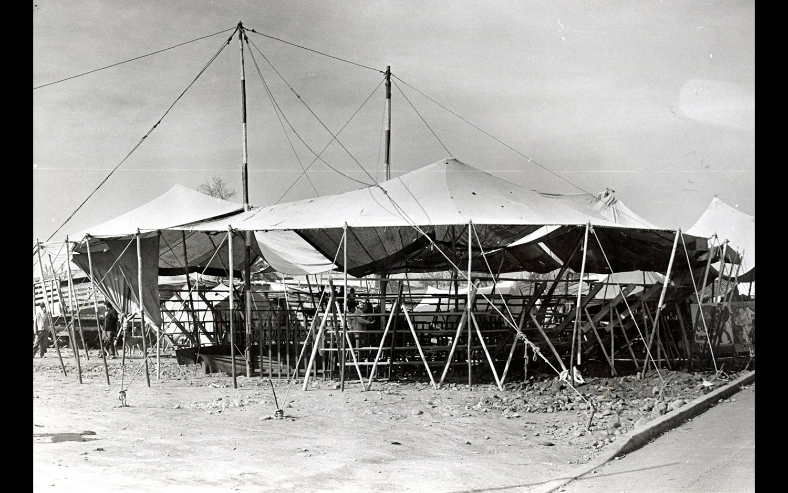
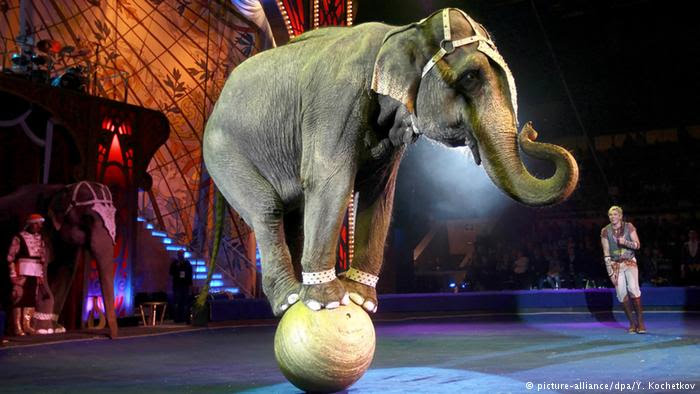
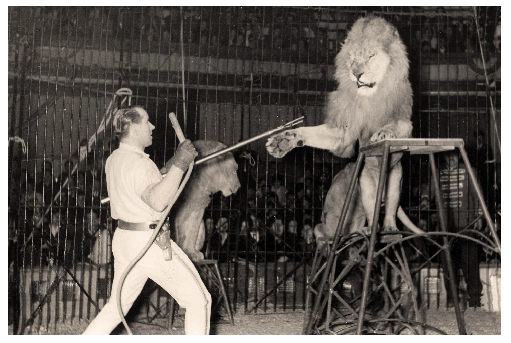
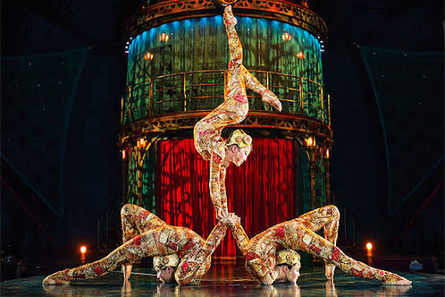
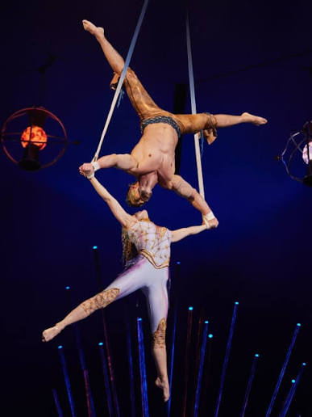
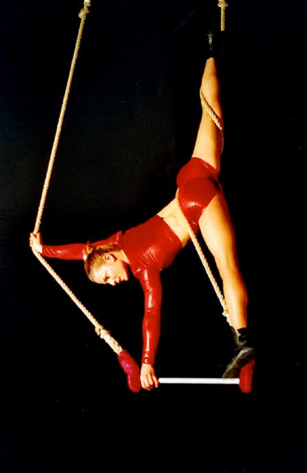

La pregunta
El circo no desapareció: cambió de protagonista.
Durante siglos, el asombro circense estuvo asociado a la exhibición de lo extraordinario: cuerpos en riesgo, familias itinerantes, domadores y animales en pista. Sin embargo, las últimas décadas instalaron una pregunta incómoda: ¿qué ocurre cuando la figura animal deja de ser aceptada por la sociedad?
La respuesta que propone esta webstory es que el circo no se extingue, sino que se reconfigura. La pista se desplaza desde la dominación animal hacia el virtuosismo humano, la narrativa escénica, la iluminación, la música y la formación profesional del artista.
Acto I
La norma global y el despertar cultural
La regulación internacional revela que el retiro de animales dejó de ser una excepción. En numerosos países, la presión ética y la opinión pública antecedieron o empujaron cambios legales.

2002
Costa Rica aparece como uno de los primeros hitos regionales.
2005
Austria marca un precedente europeo relevante.
2013
El debate ético se intensifica con nuevos registros y presión pública.
2016
Ringling Bros. jubila sus elefantes.
2023
Francia avanza en una prohibición progresiva.
Como muestra el gráfico siguiente, las restricciones no avanzan de manera uniforme: algunos países cuentan con hitos claramente documentados, mientras que otros registros muestran información temporal incompleta. Esa diferencia permite entender que el cambio legal es progresivo y desigual.
La muestra normativa reúne 38 países y permite observar cómo la discusión se trasladó desde casos aislados hacia un debate internacional sobre bienestar animal, legitimidad cultural y nuevas formas de espectáculo.
Ola cronológica global
Países con hitos normativos documentados en la base.
Tipos de restricción
Comparación entre prohibiciones, animales afectados y estatus legal.
El segundo gráfico permite ver qué tipo de animales son protegidos con mayor frecuencia. Allí aparece una señal clave para la historia: muchas legislaciones no eliminan todo tipo de presencia animal, sino que apuntan primero a especies salvajes o consideradas incompatibles con el encierro, la itinerancia o el entrenamiento para espectáculo.
El cambio legal no se produjo en el vacío. Documentales, denuncias, campañas de organizaciones animalistas y transformaciones en la sensibilidad de las audiencias alteraron la tolerancia pública frente a las prácticas tradicionales.
“La opinión pública dictó la sentencia antes que los tribunales.”

La industria
Algunas compañías se adaptaron. Otras nacieron con un modelo completamente distinto.
La transición no ocurrió igual en todos los circos. Las compañías históricas debieron responder a presiones éticas y regulatorias, mientras que muchas agrupaciones contemporáneas nacieron directamente sin animales, vinculadas al teatro físico, la música, la danza y la experimentación escénica.
Acto II
El nudo legislativo chileno
Chile aparece como un caso tensionado: la práctica cultural cambia, pero la discusión legal avanza lentamente y mantiene zonas grises en torno a los animales amaestrados.

En el caso chileno, la visualización legislativa permite observar una paradoja: mientras el debate social y cultural avanza, la normativa no se transforma con la misma velocidad. La Ley 20.216 protege y regula la actividad circense, pero no establece una prohibición general del uso de animales.
En 2020, el Senado rechazó una indicación que buscaba modificar el concepto de “animales amaestrados”. A la vez, proyectos orientados a una prohibición más amplia han permanecido sin avances significativos, dejando el cambio principalmente en manos del propio sector cultural y de presiones sociales puntuales.
Chile y la discusión legal
Hitos legislativos y judiciales vinculados al uso de animales.

Acto III
La fractura del oficio
Aunque la ley no cambia de manera decisiva, el campo circense chileno sí lo hace. La comparación entre agrupaciones tradicionales y contemporáneas muestra dos formas distintas de entender la transmisión del oficio.
El circo tradicional chileno se sostiene sobre una lógica familiar e itinerante. Su memoria se conserva en apellidos, empresas circenses, rutas de temporada y aprendizaje transmitido de generación en generación.
En cambio, el circo contemporáneo aparece asociado a espacios de formación más abiertos: talleres, universidades, proyectos sociales, escuelas independientes y colectivos culturales urbanos. Los gráficos siguientes muestran esa diferencia de identidad y organización.
Modelo tradicional
Eje familiar e itinerante
El modelo clásico chileno opera mayoritariamente bajo la figura de empresa circense. La formación se vincula a la transmisión familiar y a la experiencia práctica dentro de la carpa.
Modelo contemporáneo
Eje profesionalizado y asociativo

El nuevo circo chileno se organiza en colectivos, fundaciones, corporaciones o agrupaciones comunitarias. Su formación se vincula a talleres, espacios académicos y proyectos sociales.
Mapa comparativo de agrupaciones chilenas
El heatmap resume tipo de circo, formación predominante y estructura orgánica.

Conclusión
La pista cambió antes que la ley.
El repliegue del látigo demuestra que la transformación del circo no depende únicamente de una prohibición legal. La sensibilidad pública, la presión ética, la evolución de las audiencias y la formación de nuevos artistas han empujado un cambio profundo en la identidad circense.
En el mundo, las restricciones legales reducen el espacio del espectáculo animal. En la industria, las compañías contemporáneas consolidan modelos escénicos sin fauna. En Chile, aunque el marco normativo sigue siendo incompleto, el oficio ya se divide entre una tradición familiar viva y una escena profesionalizada que nació mirando hacia el cuerpo humano como centro de la pista.
El circo no perdió su capacidad de asombro: cambió el origen de ese asombro.
Metodología
Cómo se construyó la historia
La investigación organiza el problema en tres aristas para no mezclar unidades de análisis: países, compañías y agrupaciones chilenas.
Recolección
Se reunieron datos normativos, casos de industria y registros del sector chileno.
Limpieza
Se separaron las bases para evitar mezclar países, compañías y agrupaciones.
Análisis
Se buscaron patrones sobre animales, legislación, formación y estructura organizacional.
Visualización
Se diseñaron gráficos interactivos para comunicar los hallazgos principales.
Fuentes
Fuentes y materiales consultados
La webstory se construyó con bases de datos propias elaboradas a partir de fuentes institucionales, registros públicos y antecedentes trabajados durante el semestre.
Fuentes de datos
- FOUR PAWS International.
- Animal Defenders International.
- Catastro de Arte Circense Chileno, CNCA.
- Registros documentales y periodísticos sobre compañías circenses.
Fuentes del caso chileno
- Ley 20.216 sobre actividad circense en Chile.
- Antecedentes legislativos sobre animales amaestrados.
- Casos judiciales y denuncias públicas vinculadas al uso de animales.
Archivos del proyecto
- Base Mundo: normativa y restricciones.
- Base Industria: adaptación de compañías.
- Base Chile: tradición familiar y profesionalización.
- Visualizaciones interactivas en HTML.